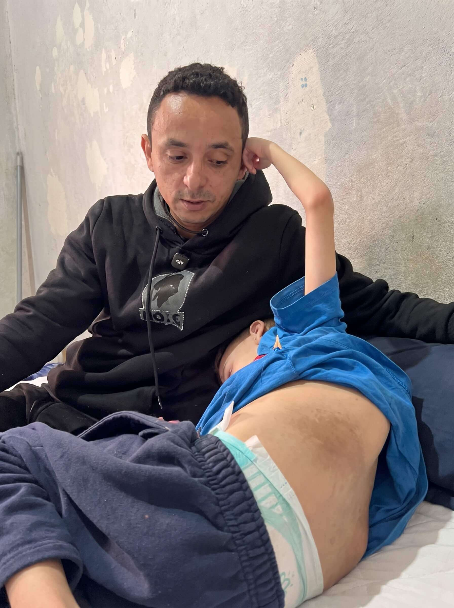
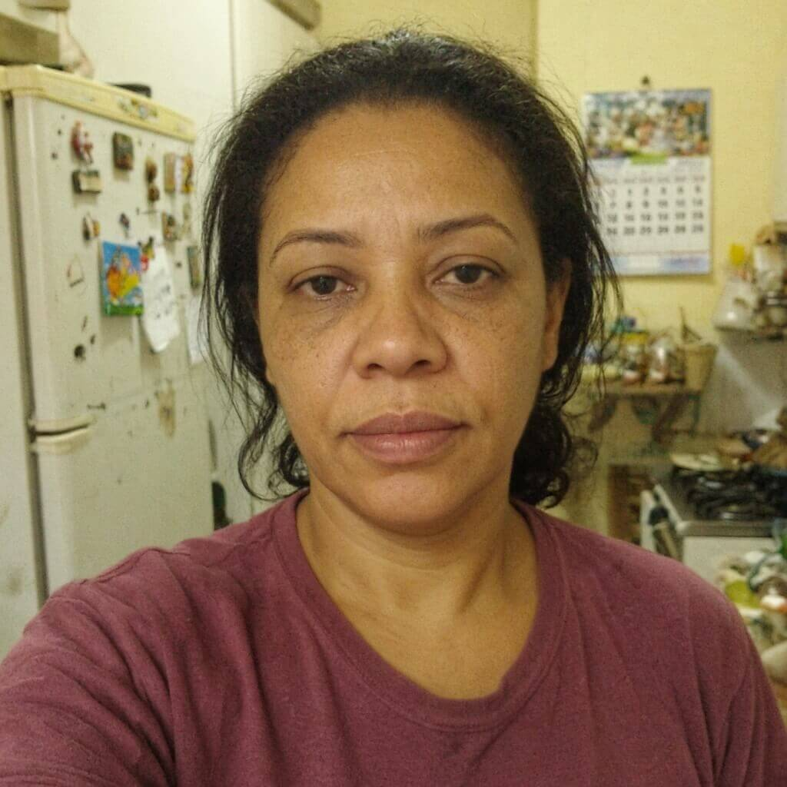

"Meu filho já está há 4 meses lutando contra um Sarcoma de Partes Moles na coluna. O tempo está esgotando e ele precisa muito da sua ajuda!"
O pequeno Miguelzinho enfrenta um Sarcoma de Partes Moles — um tipo de câncer agressivo que formou um tumor perigoso na coluna e nas costas dele. Precisamos comprar os remédios com urgência para salvar a vida dele!

PIX 100% seguro · Direto para o tratamento do Sarcoma de Partes Moles
⚠️ Entenda a gravidade: O que é o Sarcoma de Partes Moles?
O Sarcoma de Partes Moles é um tumor maligno raro que ataca os tecidos de sustentação do corpo, como músculos e nervos.
Como o tumor do Miguelzinho cresceu bem na região da coluna, ele causa consequências graves:
- Dores insuportáveis: O tumor aperta os nervos da coluna dia e noite.
- Caroço visível e inchaço: A lesão avança e consome as forças do menino.
- Risco gravíssimo: Sem o tratamento adequado e contínuo, a doença pode paralisar e destruir a saúde dele rapidamente.
💊 Os remédios e exames necessários para travar esse câncer são caríssimos e a família não tem como pagar sozinha.
Já são 4 meses de uma rotina pesada de hospitais, exames caros e muita angústia. O dinheiro público não cobre os remédios necessários a tempo.
👨👩👧 Uma família sem dinheiro e esgotada.
Depois de 4 meses lutando contra a doença, os pais do Miguelzinho já gastaram tudo o que tinham. Eles não têm mais de onde tirar dinheiro nem para a condução até o hospital.
Qualquer valor no Pix faz uma diferença gigante nessa reta decisiva. Ajude a salvar essa criança!
Já são 4 meses vendo nosso filho sofrer com esse Sarcoma na coluna. Ver ele chorando de dor e não ter dinheiro para comprar o remédio é uma dor que destrói a gente. Por favor, nos ajudem a salvar o Miguelzinho. 🙏 — Pai do Miguelzinho
Não feche esta página. O Miguelzinho precisa de você agora!
Há um pai de família sofrendo atrás desta tela, lutando há 4 meses para não perder o filho para o câncer.
Sozinhos eles não conseguem, mas com a ajuda de todos nós, vamos conseguir comprar esse tratamento!
Faça sua Doação Pix Rápida
Escolha um valor abaixo, escaneie o QR Code ou clique no botão verde para copiar a chave Pix e ajudar o Miguelzinho.
🔒 Doação 100% Segura e Verificada
• Sistema Oficial do Banco Central: Sua doação é processada com total segurança e criptografia bancária pelo seu aplicativo.
• Destino Garantido: Todo o valor arrecadado é transferido diretamente para a compra dos medicamentos e custos médicos do Sarcoma de Partes Moles.
• Transparência Total: Campanha monitorada em parceria direta com os pais do Miguelzinho.
🔒 Pix Seguro · Leva menos de 1 minuto
Quem já ajudou o Miguelzinho (3)
Acompanho a luta deles há meses... ver o sofrimento do menino com esse Sarcoma na coluna corta o coração. 😢 Já fiz minha doação e oro muito pela cura dele. ❤️🙏
Ninguém aguenta 4 meses lutando contra um câncer sem ajuda. Se cada um mandar um Pix pequeno, a gente bate essa meta. Já compartilhei no grupo da família! 🙏

Sou mãe e me coloquei no lugar dessa família. É desumano ver a criança passar por isso. Fiz minha parte com o Pix. O Miguelzinho vai vencer essa! ✨
Ninguém vence o câncer sozinho. Mas juntos, nós podemos dar ao Miguelzinho o tratamento que ele precisa para viver.
Faça o seu Pix agora mesmo. Cada ajuda é preciosa!
Comentários encerrados para esta publicação